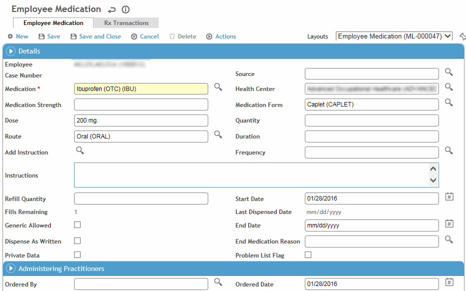

An employee’s medications can be recorded in the Demographics, Body Fluid Exposure, Medical Chart, Clinic Visits, or Immunization modules. The Rx tab in each of these modules displays all of the employee’s medications in date-descending order, regardless of where they were entered.
Use these steps to record a medication that you are dispensing locally or for which you are recording a prescription that will be printed or emailed directly to a pharmacy.
If you want to copy an existing prescription for an employee to continue the medication when the refills have run out, retrieve the medication record and choose Actions»Copy for New Prescription. If the original medication record is still active, it is ended with today's date, the End Reasonis set to 'Prescription Complete' and the relevant details are copied to a new record. Complete the new record as required.
Recording a Medication
On the Rx tab, in the top section, click a link to edit an existing medication, or click New.

To quickly add a medication, click in the top section of the Rx tab and select the medication, start and end dates, practitioner, and any notes. If you want to capture any other information, click New instead, or edit the medication record after you add it.
Select the Medicationand change the Strength, Form(e.g. tablets, capsules, liquid, etc.) or Routeif necessary.
Select the Sourceof the medication.
Enter information about the prescription (quantity, duration, frequency and any instructions).
Some of this information may have been defined as default values for this medication in the Medication table, but can be changed.
Indicate further instructions for the pharmacist (or dispensing practitioner) -- if this medication should be dispensed exactly as written (e.g. the prescription specified 5mg tablets but the pharmacy only has 10mg tablets, they cannot be dispensed), if a generic version can be substituted, and the quantity of refills allowed.
Indicate if this information should be included on the Problem List(see Working with the Problem List), and if the data is Private(private data can be included or excluded in reports where indicated).
Specify the practitioners who ordered, collaborated on, and dispensed the medication.
If you are dispensing the medication directly from your clinic:
Record and save the medication as described above.
User who matches the Practitioner field signs the medication record (choose Actions»Sign). The practitioner’s electronic signature is added to the record. If a record was locked before it was signed, the Sign action is still available.
Choose Actions»Dispense. Complete the fields that identify what was dispensed (Lot No, Expiration Date, Dispense Quantity) by whom and when.
The Lot Nopicklist displays the current inventory level for the medication.
Enter any Instructions, or select predefined instructions (from notes defined as General or Medication category in the AddNote look-up table).
If the related system setting is enabled, you can enter a new lot number directly in the field; a lot record is automatically added to the MedicationLot table.
The Fills Remainingand Date Last Dispensedon the medication record are updated, and the health center’s inventory is updated (see Inventory).
A dispense transaction is recorded on the Rx Transactions tab.
To void or add comments to a dispense transaction, select it on the Rx Transactions tab and choose Actions»Update Dispense Transaction Record. Select the Voidcheckbox and/or enter any Comments, as required, then save the record. If you void the transaction, the inventory for that medication is updated accordingly.
Printing or Emailing a Prescription
The following must be completed in order to issue a prescription:
Create a prescription layout for your health center in the HealthCenter look-up table.
Record and save the medication as described above.
User who matches the Practitionerfield on the medication record signs the medication/prescription (choose Actions»Sign). The practitioner’s electronic signature is added to the record. If a record was locked before it was signed, the Sign action is still available.
User who is granted appropriate role (designated in the appropriate system setting) is able to print or email the prescription after it has been signed (choose Actions»Print Prescription or Actions»Email). The Ordered Dateis updated to the current date and Ordered Byis updated to the user who is printing the record. A PDF version of the record is created (and attached to the email, if applicable). The email address for the pharmacy must be defined in the Pharmacy look-up table (see Populating Look-up Tables).
A print transaction is recorded on the Rx Transactions tab.
If a default health center is not set, or default health center does not have a prescription configuration (defined in the HealthCenter table), the PDF shows a blank prescription.
Recording a Refill
On the Rx tab, retrieve the original medication record.
At the bottom of the form, indicate the quantity and the refill date.
Click Save.
To print or email the prescription to a pharmacy, choose Actions»Printor Actions»Email. For more information, see Printing or Emailing a Prescription.
 in the top section of the Rx tab and select the medication, start and end dates, practitioner, and any notes. If you want to capture any other information, click New instead, or edit the medication record after you add it.
in the top section of the Rx tab and select the medication, start and end dates, practitioner, and any notes. If you want to capture any other information, click New instead, or edit the medication record after you add it.